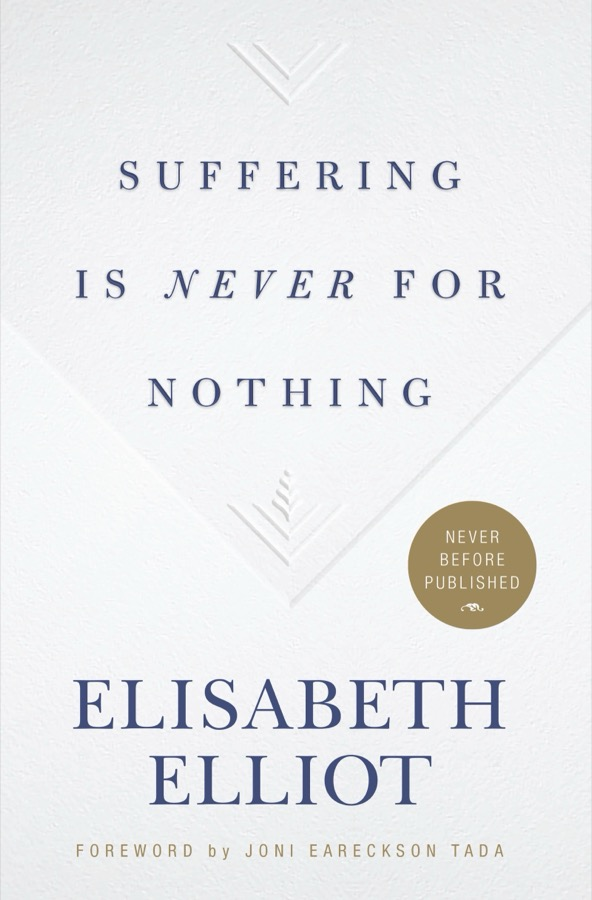

Six talks Elisabeth Elliot gave at a small conference, recorded on CDs and published as a book only after her death. Her husband Jim was speared to death in the Ecuadorian jungle in 1956; her second husband, Addison Leitch, died of cancer three and a half years into their marriage. She does not explain suffering. She walks you through what to do with it: accept it, thank God in it, offer it back, and watch Him exchange it.
The definition
Suffering is having what you don't want, or wanting what you don't have.
Elliot chose it on purpose so it would reach from the washing machine overflowing on the night the boss comes to dinner, all the way to a husband's cancer. Everything she says applies at both ends of that range: the trivial annoyance trains you for the terrible loss.
The shape of the book
The first two chapters look at the problem honestly. The last four are a sequence, and Elliot says plainly that each step grows out of the one before: if we receive what God gives, and thank Him, and offer it back, then comes transfiguration.
Look at the facts without platitudes. The answer is not an explanation but a Person.
Suffering is how God gets our attention. His message is short: trust Me.
The key to peace: a willed "Yes, Lord," and then doing the next thing.
Not thanks for the cancer, but thanks in it, because the world is still in His hands.
Whatever is in your hands, even loneliness and dread, can be given back as a sacrifice.
The exchange at the cross: my deaths for His life, my sorrows for His joy.
Chapter one
Elliot opens where most Christian books on pain don't dare to: with Ivan Karamazov's speech in The Brothers Karamazov about a five-year-old girl tortured by her parents, and Ivan's decision to "return the ticket" to God. She adds what she has seen herself: a friend dead at nine, the missionaries John and Betty Stam (who had sat at her family's supper table) beheaded in China, a newborn crying in withdrawal from cocaine. Look at that data for five minutes, she says, and a loving God cannot be deduced from it.
She also refuses the opposite escape. On a plane she sat next to a woman reading a manual that promised "Create your own reality." Elliot would hate to be so desperate that she had to invent her own reality in the face of the facts.
The psalmist's "I will fear no evil" is not naïve. He does not say there is no evil; he says "for thou art with me." And Romans 8 gave her a comfort for the things she cannot answer, the suffering of babies and even of her Scottie dog McDuff: creation itself will one day be freed from mortality into the liberty of the children of God.
Chapter two
With C. S. Lewis she calls pain God's megaphone. Then she goes to Job, which she notes is probably the oldest book in the Bible and the one that deals head-on with suffering.
In her first year as a missionary, proud of her preparation, she prayed for a language helper for an unwritten tribal language. God sent Macadao, the only person anywhere who spoke both Spanish and Colorado. After two months, while she was reading 1 Peter 4:12 ("think it not strange concerning the fiery trial"), she heard gunshots. Macadao had been murdered. There was no replacement. God's answer to her "why" was not an explanation: Trust Me.
"I am either held in the Everlasting Arms or I'm at the mercy of chance."
A faith that depends on God answering in a particular way would have collapsed. Hers had to rest on God's character. That is the faith of Shadrach, Meshach and Abednego: our God is able to deliver us, "but if not" we still will not bow.
The chapter ends on Psalm 46. Elliot says she was told "be still" can fairly be rendered "shut up and know that I am God." That is the message.
Chapter three
She can now joke about having had three husbands. (Lars, her third, once reassured a worried organiser with only one name card that "the other two are dead; I don't think they're going to show up.") She says that lightness is only possible because God enabled her to accept their deaths. Acceptance, she says, is the key to peace in suffering.
Love in the Bible is not a sentiment but a willed love that wants nothing less than our best. Faith is the same: "a willed obedience action." Jesus' conditions for following Him are to give up your right to yourself (say no to yourself), take up the cross (say yes to God), and follow.
Once Boston's Logan Airport closed: chaos, crying, fist-fights with ticket agents. She felt peace. She and Lars were not at the mercy of the weather, let alone the airport. "We're not adrift in chaos. We're held in the everlasting arms."
Do the next thing.
She took this from an old Saxon saying she was told is inscribed in an English parsonage, and calls it the simplest formula she knows for peace. After the spears she went back alone to her jungle station with a ten-month-old baby, a school of forty boys, fifty new believers without Scripture, a literacy class, a diesel generator, medicines and births. There was no time for a pity party. Years later, after Addison's death, dishes, floors and laundry were "my salvation." Her daughter Valerie, raising five children, told her: "Momma, I do just what you taught me. I do the next thing."
Six weeks after Jim's death, her mother-in-law wrote that she must be repressing her feelings and would eventually crack. Elliot's peace vanished for a while. She went back to the promises God had given her day by day, mainly that Christ is the same yesterday, today and forever. Jim died yesterday; the same Lord was with her today; she did not have to carry the next fifty years tonight.
Two images close the chapter. Jim, building furniture, couldn't stand her hanging over his shoulder asking what each piece was for: "When it's finished, you'll see." Accept now, see later. And Psalm 116: "What shall I render unto the Lord? I will take the cup of salvation." Whatever is in that cup, she says, she will take it, because she trusts the One who hands it to her.
Chapter four
Acceptance and gratitude, she says, are the two things that ought to make Christians visibly different. "It's not the experiences of our lives that change us. It is our response to those experiences." We all know people whom terrible things refined into gold, and others whom equally bad things left bitter. The difference was their response.
She admits, to her shame, that the clearest example she ever saw was not Christian. Among the Waorani, the people who killed Jim and with whom she later lived in houses without walls, nobody complained. Women carried fifty-pound baskets for four hours through mud and set them down without a sigh. Her daughter grew up among them, and Valerie's husband later said, "That woman never complains about anything."
The same day she wrote her four steps (below), the doctor told them that Addison had cancer; soon after, tests found a second, unrelated cancer. Walking across the parking lot he quoted Gray's elegy, "the curfew tolls the knell of parting day." He had lost his first wife and his father to cancer. Elliot prayed not to make "a career out of my troubles," a phrase a young mother of a boy with a dangerous heart condition had used with her a week earlier. Her journal from those days says: "Good and peaceful all day."
She never thanked God for cancer or for the murder. She thanked Him that, in the middle of both, the world was still in His hands.
Jesus' miracles, she notes, met people where something had run out: the wine at Cana, food on the hillside, a man lame for thirty-eight years. Ask yourself where your wine has run out, because that is where He touches your life. Forgiveness belongs here too: "excuse me" is for stepping on toes; "forgive me" is for real offences. Her final note: in Psalm 55:22, "cast your burden on the Lord," she understood the Hebrew word for burden to be the same as the word for gift. If she thanks God for the very thing that is killing her, she can dimly begin to see it as a gift.
The tool in the book
On a morning when she had no idea what the day would bring, Elliot wrote four lines on a scrap of paper. That afternoon her husband's cancer was diagnosed. It is the most practical thing in the book.
…and then, in her words, do the next thing.
Practice
Your answers stay only in this browser on this device.
Chapter five
Her three points: everything is a gift; there are several kinds of offering we can make; and the greatest offering is obedience. A gift from God is never only for us. Like her nephew's violin, it is meant for the life of the world. Jesus offered Himself as "bread for the life of the world," and Christians are to be "broken bread and poured out wine."
Romans 12:1 asks us to present our bodies as a living sacrifice, which includes temperament, prejudices and failings. Slowly she came to see even her widowhood as the setting in which God wanted to be glorified. Joseph, sold by his brothers, could say "it was not you who sent me here, but God," and named his son Ephraim: God has made me fruitful in the land of my affliction. As a child during the Depression she could only buy her mother a Christmas present with money her mother had given her first. So it is with God: "All things come of thee, O Lord, and of thine own have we given thee."
During Addison's illness she woke at two or three in the morning, the hours Amy Carmichael said turn molehills into mountains, picturing the mutilating treatments ahead. Then it came to her that her anguish for him was itself something God had put in her hands to offer back. "A broken and a contrite heart, O God, thou wilt not despise": if that is all you have to offer, God will not despise it.
Her three-year-old brother Tom was allowed to scatter paper bags over the kitchen floor if he put them back. When called, he said with seraphic sweetness, "But I wanna sing 'Jesus Loves Me.'" Her father stopped playing the piano: to obey is better than sacrifice. Ezekiel 24 shows it at its starkest: "at evening my wife died; and the next morning I did as I was commanded."
"I have discovered that there is no consolation like obedience."
A woman wrote to her about the day her father was buried during the Depression: no friends came, the house was mortgaged, the lawyer stole the inheritance, seven children. Back home, her mother picked up a broom and swept the kitchen, and that soft swish, the daughter said, began the healing. Asked later how she made it, the mother said, "I prayed." Elliot adds: she prayed, and she did the next thing. She picked up the broom.
Ministry, Elliot insists, is not mainly podiums and books. Most of her life was desks, sinks, ironing boards, grocery stores and airports: moments to be offered to Jesus.
Chapter six
She chose "transfiguration" over "transformation" because it carries glory. On the mount of Transfiguration, Moses and Elijah were talking with Jesus about His coming suffering. Glory and suffering touch.
Fanny Crosby was blinded as a six-week-old baby by a doctor's hot poultices. At nine she wrote that she would not "weep and sigh because I'm blind." She went on to write some 8,000 hymns. Isaiah 58:10–11 names the pattern: pour yourself out for the hungry, and your light will rise in the darkness and you will be like a watered garden.
She closes with Grant Tullar's weaver poem: we see only the underside of the tapestry, and the dark threads are as needful as the gold and silver in the pattern.
Keep